變化總覽：選擇 → 變化 → 建築 → 居民
生成：2026-11-13，scripts/changeSheet.ts。狀態、居民與建築介紹來自 RESIDENT_SCENE_PLAN，日文文案來自結果卡與設施卡的程式，選項來自正式問卷，截圖來自 scripts/closeupSheet.mjs（靜態 DEV 畫面，並非 live 過場）。佔比為模擬數字，並非真人數據。
變化成因： 每位 guest 回答四題，每個選項將對應軸的 Meter 推 −1、0 或 +1。Meter 是所有人累積的結果；每份提案最多令一個地點前進一級，並優先採用 guest 自己推動的方向。因此 guest 的選擇不一定等於本次的變化方向，結果卡第二句一律說明實際變化。
NW focal — デックス西 AUTO HUB（−1／0／+1） 10.6%
階段 1：建築／變化 階段 2：居民情景 下一步 驗收（旗艦 R9） 湊：DEV 演示齊備，三個狀態、四種轉變（handoff）；owner 接受作演示 階段 2 收尾：演技、口形、正式接入
建築 ：位於デックス東京ビーチ西側水邊的 AUTO HUB 服務樓（16×24 米，高 32 米）。用途 ：居民辦理包裹、手續及查詢的窗口。−1 為人手窗口，0 為日間有人、夜間機械，+1 為全自動並設無人機起降場。存在理由 ：街道服務不再由行政或大企業單方決定；居民選擇要人還是要自動，AUTO HUB 便隨之改變。
NW 0 → +1 nw:focal，佔全部提案 5.5%
哪項選擇推向這一邊 日々の買い物や道案内。あなたは、どんな助けがあると安心できますか？「人に相談する機会は少なくても、いつでも自動で利用したい」
結果卡第一句（guest 的選擇） あなたは、自分の都合でいつでも使えるサービスを大切にしました。
結果卡第二句（變化說明） ほかの住民の声と重なり、この拠点では、自分の都合で使える自律サービスの端口が増えました。地點標示：デックス西
變化後這裏的功能（設施卡） 時間に縛られないサービス 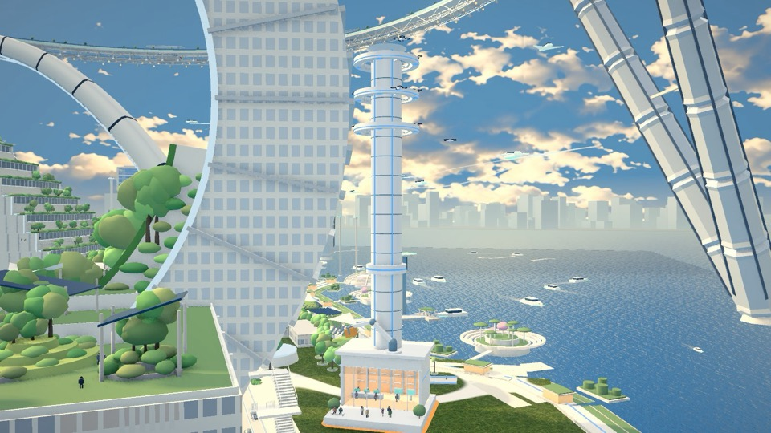
0（12:00） 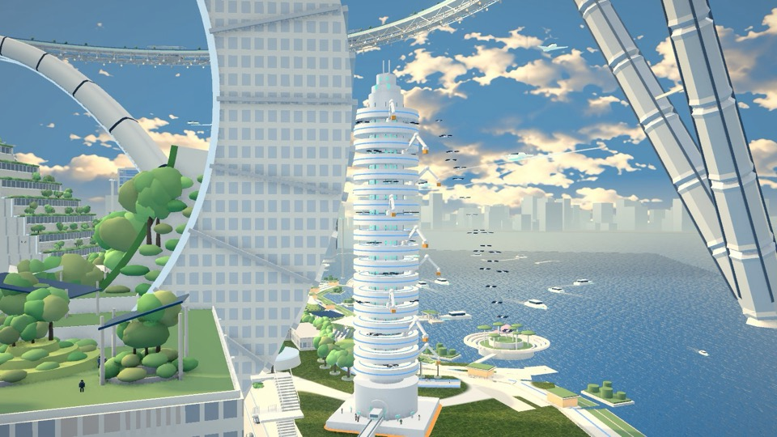
+1（12:00） 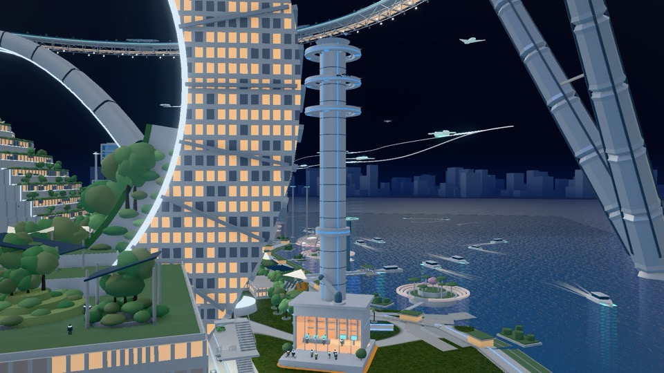
0（22:00） 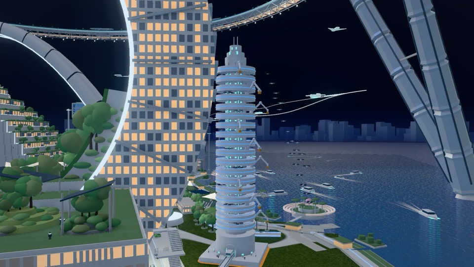
+1（22:00） NW 0 → -1 nw:focal-low，佔全部提案 5.1%
哪項選擇推向這一邊 日々の買い物や道案内。あなたは、どんな助けがあると安心できますか？「待ち時間があっても、人に相談したい。技術はその人を支えてほしい」
結果卡第一句（guest 的選擇） あなたは、人に相談できる日常を大切にしました。
結果卡第二句（變化說明） ほかの住民の声と重なり、この拠点では、人に相談できる窓口が増えました。地點標示：デックス西
變化後這裏的功能（設施卡） 人に相談できる街 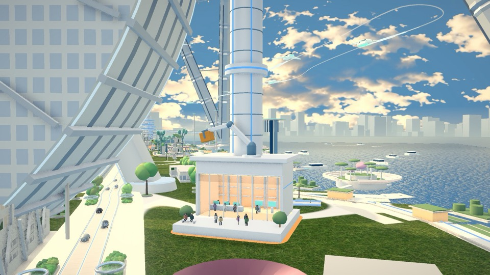
0（12:00） 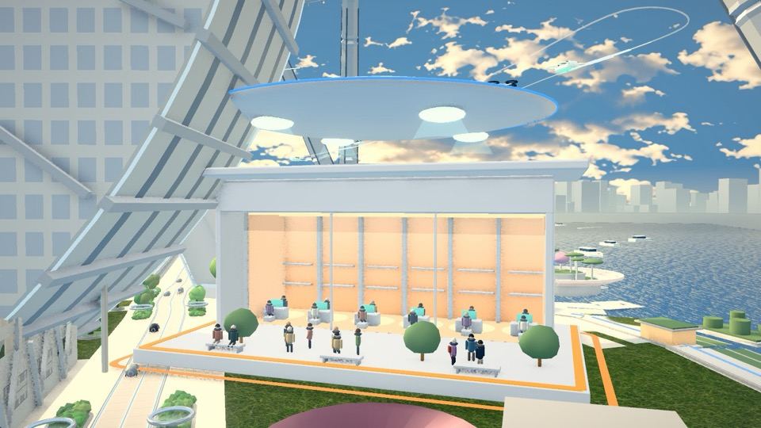
-1（12:00） 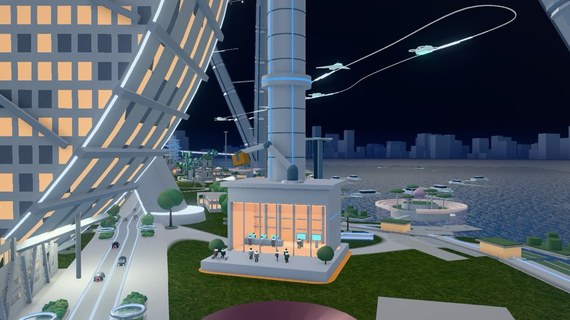
0（22:00） 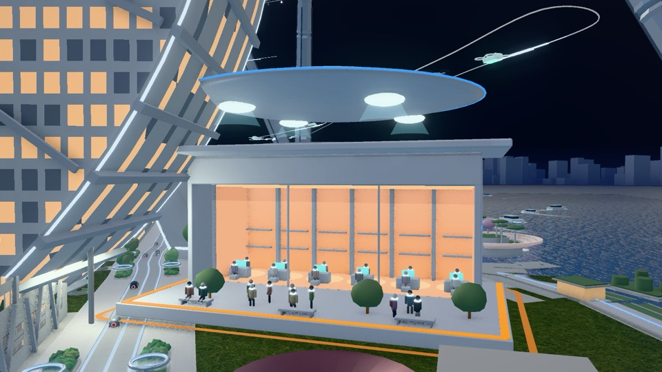
-1（22:00） 階段 2：デックス西 — 湊（ミナト）、52 歳、案内係 實際變化 台詞（字幕） 行動 得／失 向自律（→ +1） 真夜中でも荷物は届きます。でも、私の窓口は今日で閉まりました。 拉下窗口閘門、熄燈；無人機從頭上飛過；他拿著平板走開 得：全日服務。失：面對面的人 向人員（→ −1） 窓口に列ができています。待たせるけれど、顔を見て話せます。 站在窗口後方，前面排了五個人，向第一位鞠躬 得：能夠交談。失：要等候 由自律返中間（+1 → 0） 昼だけ窓口が戻りました。夜は、機械に任せています。 將包裹交給機械臂，轉身與訪客交談 得：日間有人。失：夜間無人 由人員返中間（−1 → 0） 簡単な用事は機械へ。そのぶん、困った人とゆっくり話せます。 同上 得：有時間。失：減少見面
NW bays — nw:stage-west／stage-mid／district 19.4%
階段 1：建築／變化 階段 2：居民情景 下一步 驗收（Bay R2） 未設計。提議：切回湊所在的同一佈景 決定 district 變化如何接入居民（owner 決定）
建築 ：沿岸 11 個服務灣，是 AUTO HUB 向全區的延伸。用途 ：停泊無人機、收發配送，或設人手櫃台。存在理由 ：與 AUTO HUB 同屬「人或機器」一軸，但整段岸線一同改變，約影響 19% 的結果。
NW +3 → +2 nw:stage-west，佔全部提案 13.9%
哪項選擇推向這一邊 日々の買い物や道案内。あなたは、どんな助けがあると安心できますか？「待ち時間があっても、人に相談したい。技術はその人を支えてほしい」
結果卡第一句（guest 的選擇） あなたは、人に相談できる日常を大切にしました。
結果卡第二句（變化說明） ほかの住民の声と重なり、サービス拠点と移動の構成が変わり、日々の用事を支える配置が調整されました。地點標示：水辺のサービス拠点・移動ルート
變化後這裏的功能（設施卡） 時間に縛られないサービス 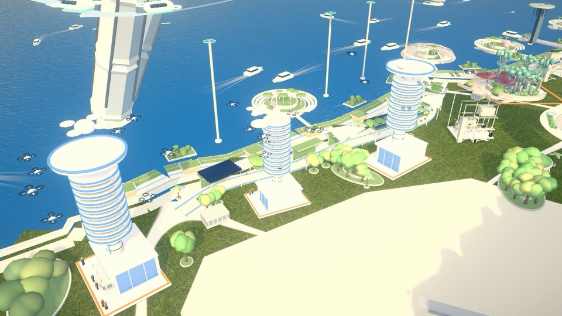
+3（12:00） 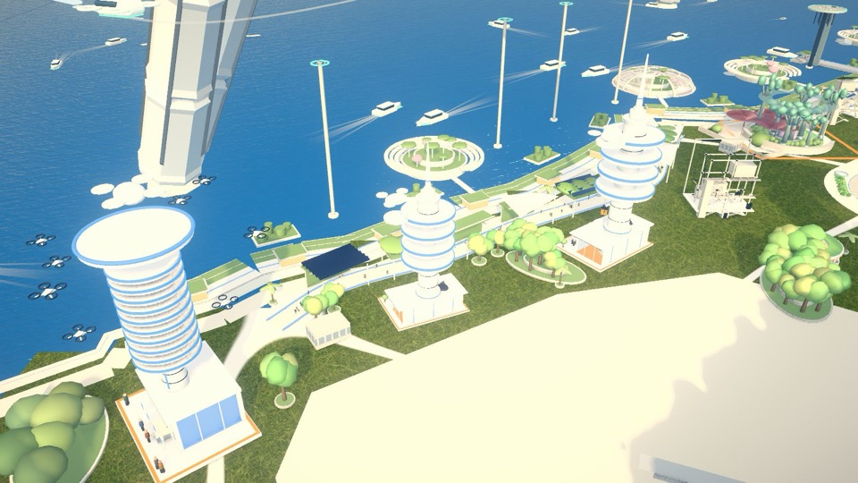
+2（12:00） 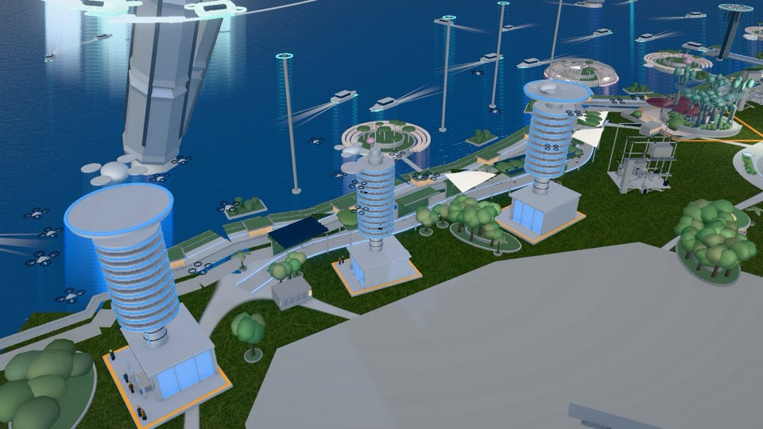
+3（22:00） 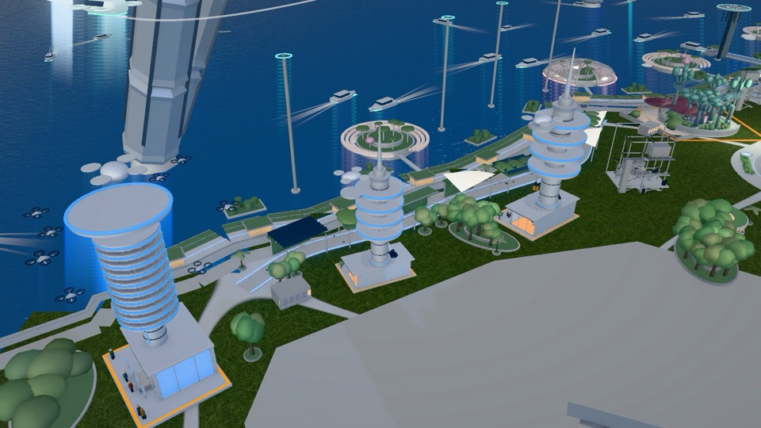
+2（22:00） NW -2 → -1 nw:stage-mid，佔全部提案 4.1%
哪項選擇推向這一邊 日々の買い物や道案内。あなたは、どんな助けがあると安心できますか？「人に相談する機会は少なくても、いつでも自動で利用したい」
結果卡第一句（guest 的選擇） あなたは、自分の都合でいつでも使えるサービスを大切にしました。
結果卡第二句（變化說明） ほかの住民の声と重なり、サービス拠点と移動の構成が変わり、日々の用事を支える配置が調整されました。地點標示：水辺のサービス拠点・移動ルート
變化後這裏的功能（設施卡） 人に相談できる街 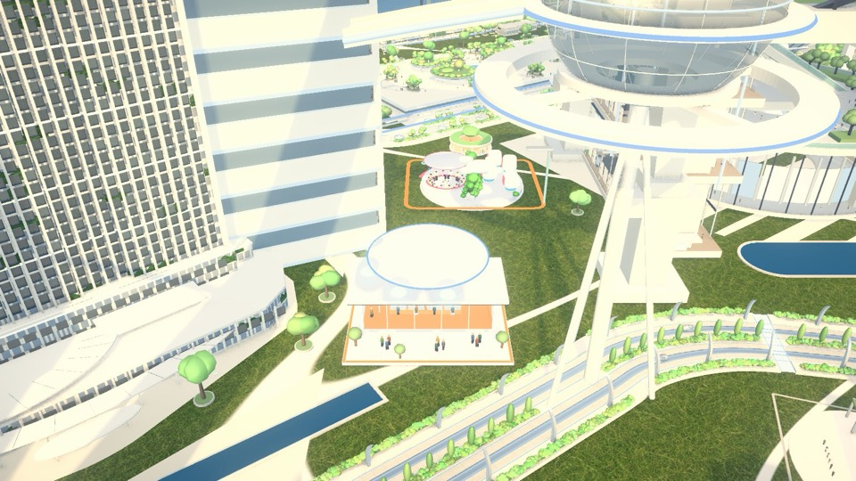
-2（12:00） 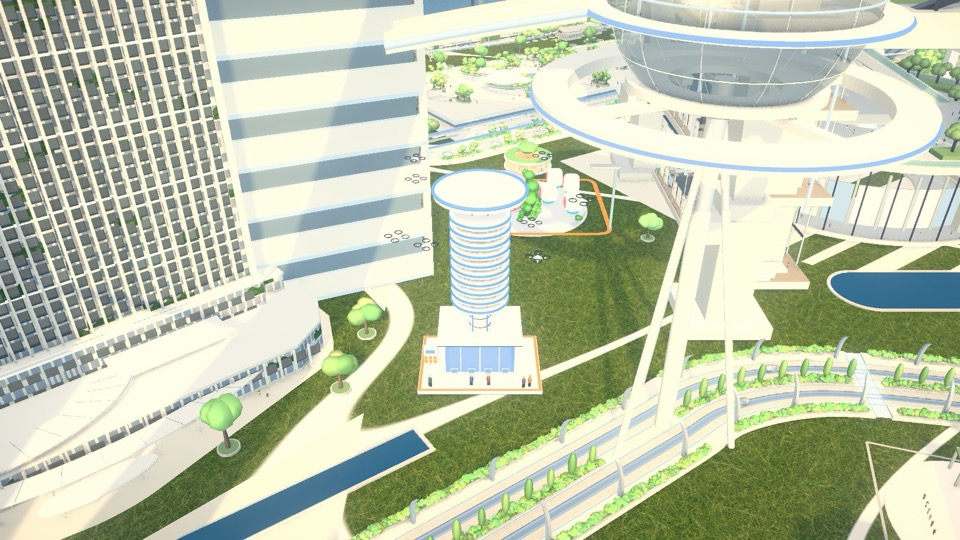
-1（12:00） 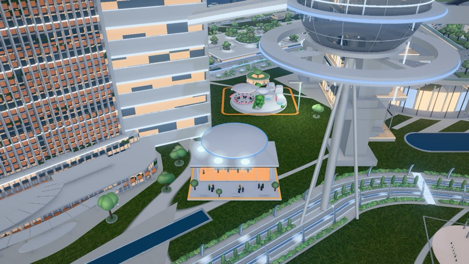
-2（22:00） 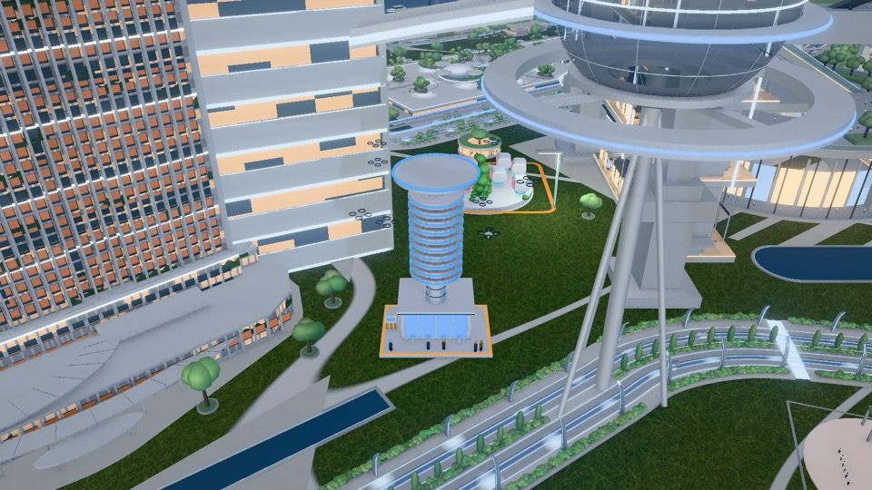
-1（22:00） SE focal — フジテレビ東（−1／0／+1） 10.9%
階段 1：建築／變化 階段 2：居民情景 下一步 驗收（R4；+1 塔 Blender R3，9/12） 時子：僅有台詞與行動草稿 階段 2 由選定鏡頭位置開始
建築 ：フジテレビ東側的 TOWER（14×14 米，高 46 米）。用途 ：+1 為單一高塔辦妥購物、就醫與行政；−1 為低矮機能 pod 散佈海邊；0 為高低混合。存在理由 ：回應日常事務應集中一處，還是分散街上；時子這類行動不便的居民受影響最大。
SE 0 → -1 se:focal-low，佔全部提案 5.6%
哪項選擇推向這一邊 買い物や日々の用事。あなたは、どんな街のめぐり方が好きですか？「少し歩いても、水辺に点在する低い建物をめぐりたい」
結果卡第一句（guest 的選擇） あなたは、水辺を歩いて用事を済ませる日常を選びました。
結果卡第二句（變化說明） ほかの住民の声と重なり、この拠点では、歩いて用事を済ませる低い建物が暮らしを支える構成になりました。地點標示：フジテレビ東
變化後這裏的功能（設施卡） 用事のあいだに、海辺を歩く 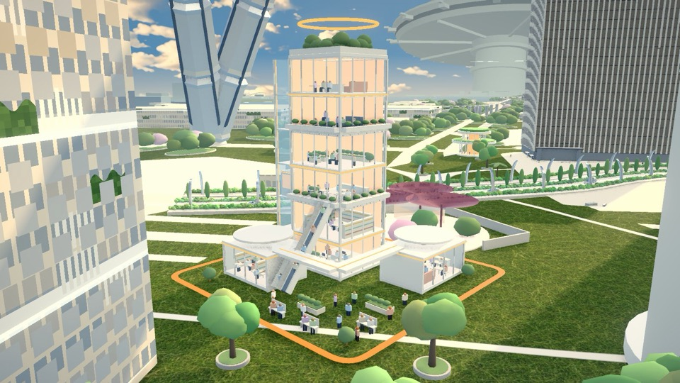
0（12:00） 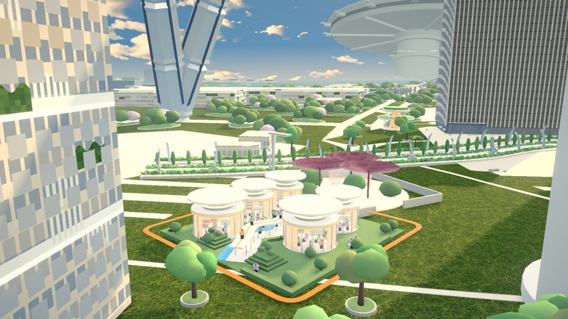
-1（12:00） 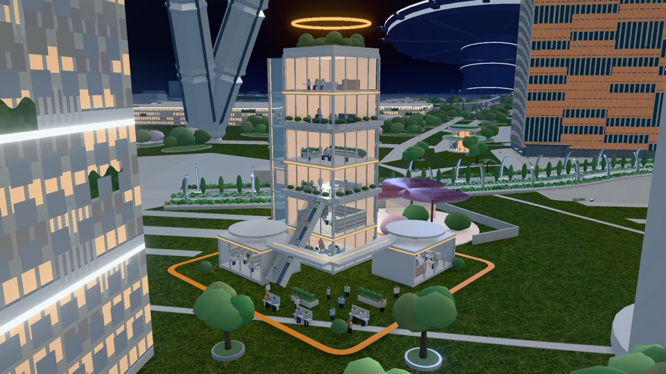
0（22:00） 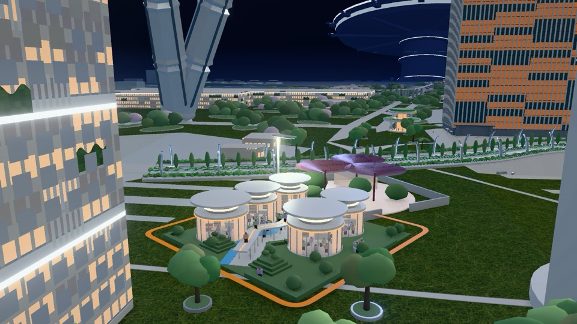
-1（22:00） SE 0 → +1 se:focal，佔全部提案 5.2%
哪項選擇推向這一邊 買い物や日々の用事。あなたは、どんな街のめぐり方が好きですか？「上へ移動して、一つのタワーで用事を済ませたい」
結果卡第一句（guest 的選擇） あなたは、一つのタワーで用事を済ませる日常を選びました。
結果卡第二句（變化說明） ほかの住民の声と重なり、この拠点では、上下に用事をつなぐタワーが暮らしを支える構成になりました。地點標示：フジテレビ東
變化後這裏的功能（設施卡） 暮らしを、縦につなぐ 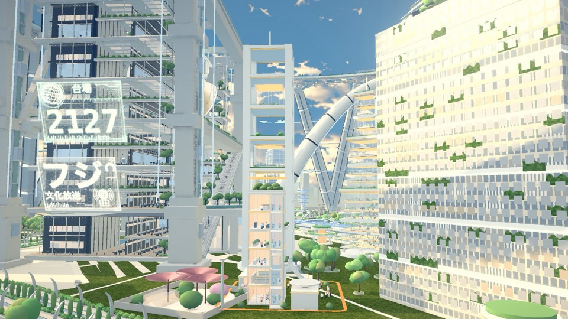
0（12:00） 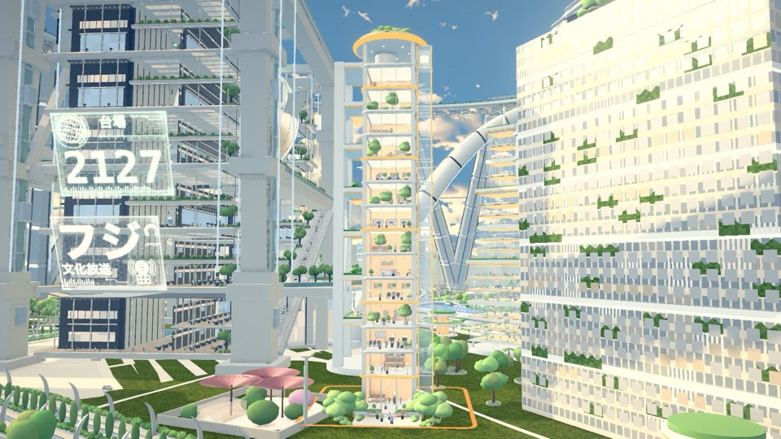
+1（12:00） 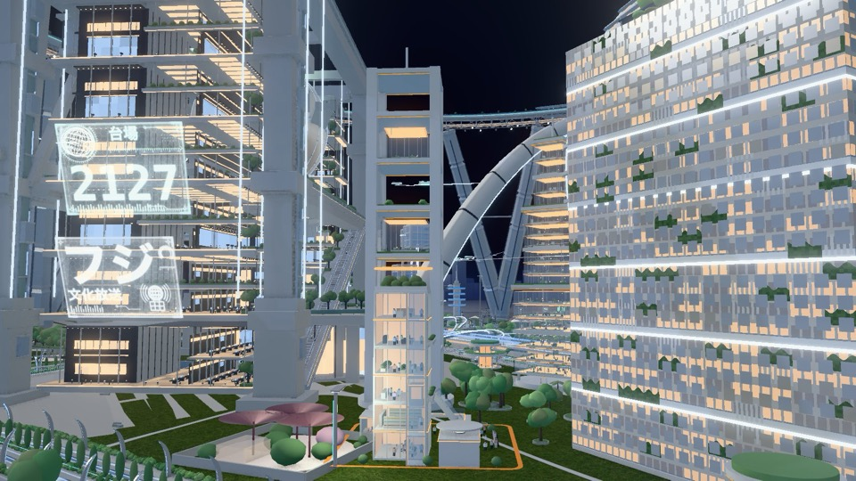
0（22:00） 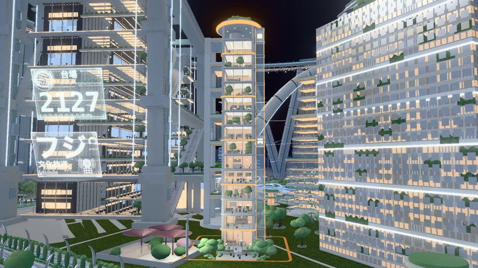
+1（22:00） 階段 2：フジテレビ東 — 時子（トキ）、81 歲、近くの住民 實際變化 台詞（字幕） 行動 得／失 向集中（→ +1） 一つの塔で、用事が全部済みます。海辺を歩く理由は、なくなりました。 走進塔的升降機，暖光升起；海邊的長椅空了 得：方便。失：散步 向分散（→ −1） 店は遠くなりました。そのぶん、毎日海を見ながら歩いています。 拄著拐杖沿有蓋步道行走，停下望海 得：海邊日常。失：路程遠 由集中返中間（+1 → 0） 用事が二か所に分かれました。途中のベンチが、私の休憩所です。 坐在半途的長椅休息，身旁放著購物袋 得：有理由外出。失：不能一站完成 由分散返中間（−1 → 0） 近くに中くらいの館ができました。雨の日は、そこで済ませます。 同上 得：雨天方便。失：步行減少
SE 塔＋pod 組件 — se:stage-east／stage-south 19.7%
階段 1：建築／變化 階段 2：居民情景 下一步 階段 1 進行中，R3 日 20/30、夜 19/30，待驗收 提議：切回時子 階段 1
建築 ：塔與機能 pod 的群組。東面為 pod；南面為扭身塔，其後有兩座雙圓筒塔。用途 ：作為集中塔與分散 pod 之間的過渡形態，近鏡可見哪個 pod 消失、哪座塔升起。存在理由 ：這是 SE 軸在整個街區的版本，讓每一票都能在街景上看到實際變化。
SE -1 → -2 se:stage-east，佔全部提案 16.7%
哪項選擇推向這一邊 買い物や日々の用事。あなたは、どんな街のめぐり方が好きですか？「少し歩いても、水辺に点在する低い建物をめぐりたい」
結果卡第一句（guest 的選擇） あなたは、水辺を歩いて用事を済ませる日常を選びました。
結果卡第二句（變化說明） ほかの住民の声と重なり、建物の構成が変わり、暮らしの用事を分け合う場所の配置が調整されました。地點標示：街に点在する建物
變化後這裏的功能（設施卡） 用事のあいだに、海辺を歩く 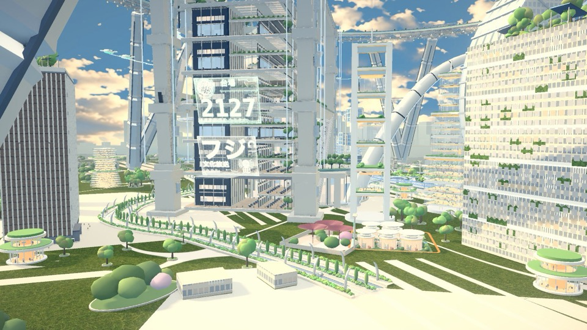
-1（12:00） 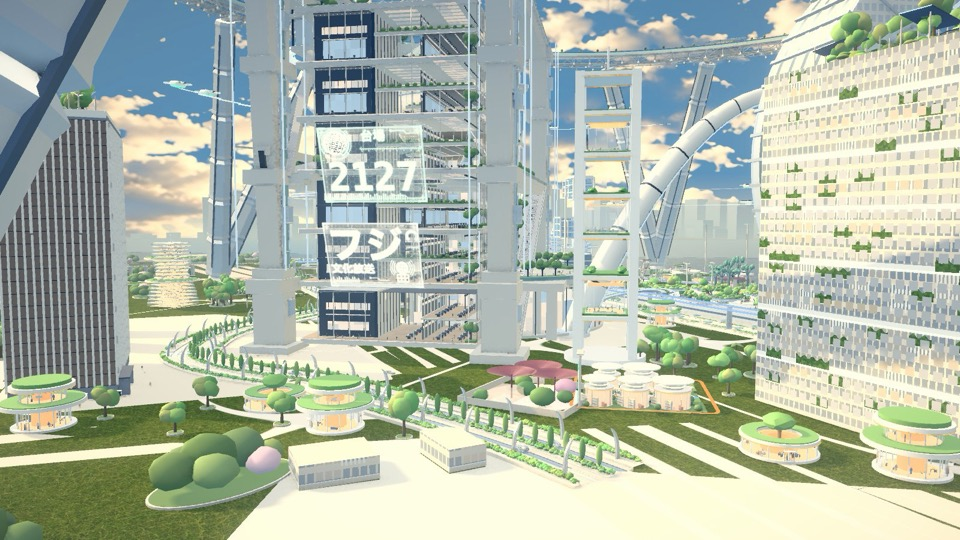
-2（12:00） 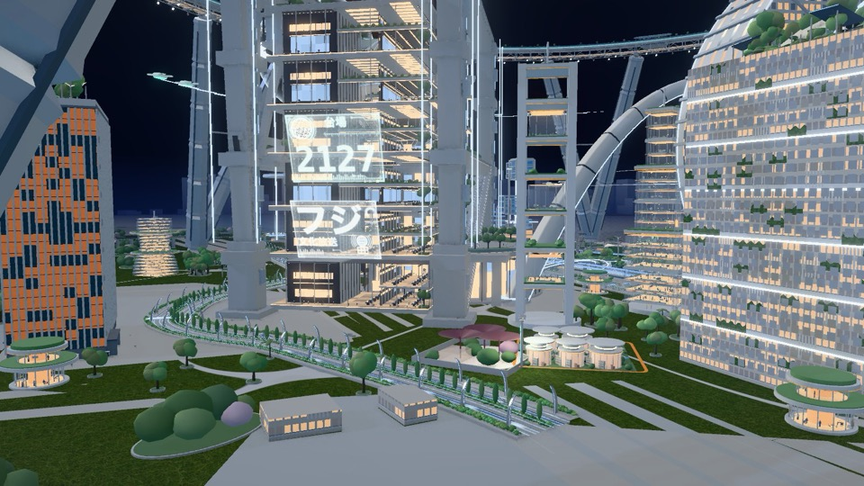
-1（22:00） 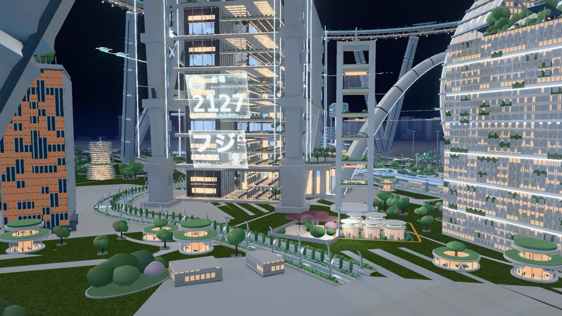
-2（22:00） SE -2 → -3 se:stage-south，佔全部提案 2.9%
哪項選擇推向這一邊 買い物や日々の用事。あなたは、どんな街のめぐり方が好きですか？「少し歩いても、水辺に点在する低い建物をめぐりたい」
結果卡第一句（guest 的選擇） あなたは、水辺を歩いて用事を済ませる日常を選びました。
結果卡第二句（變化說明） ほかの住民の声と重なり、建物の構成が変わり、暮らしの用事を分け合う場所の配置が調整されました。地點標示：街に点在する建物
變化後這裏的功能（設施卡） 用事のあいだに、海辺を歩く 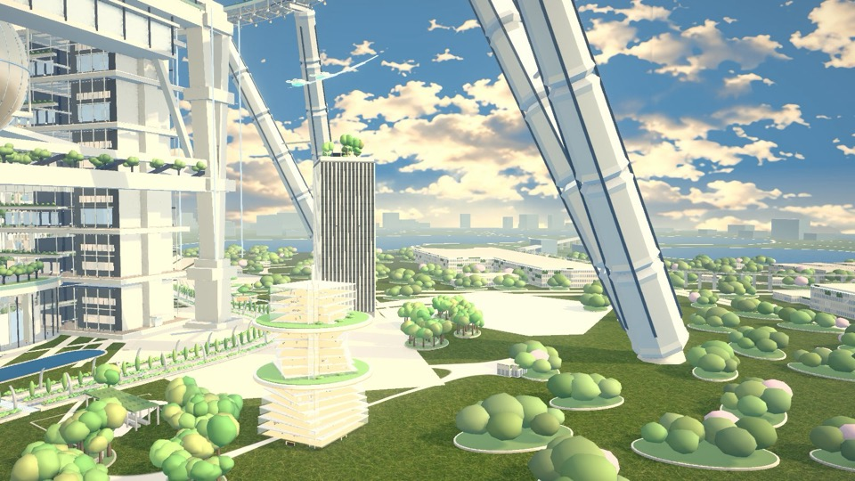
-2（12:00） 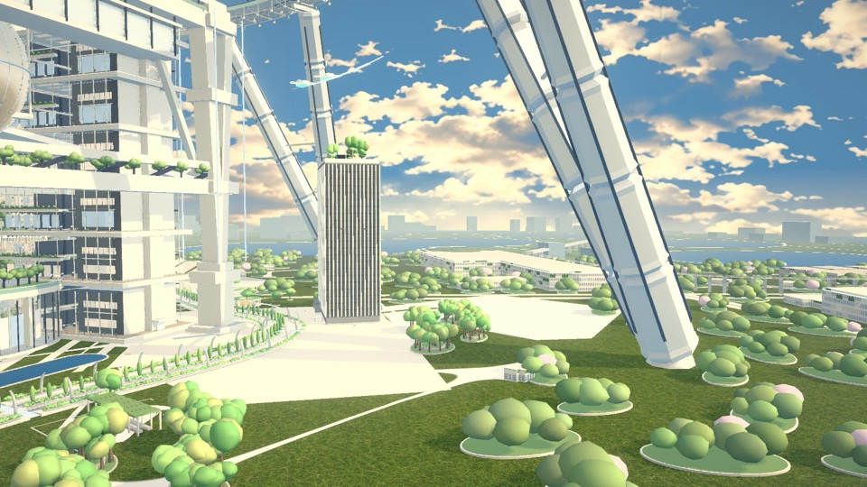
-3（12:00） 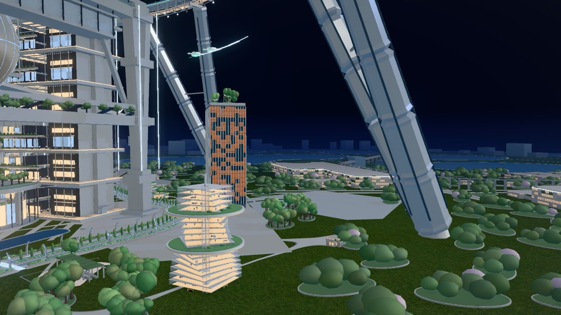
-2（22:00） 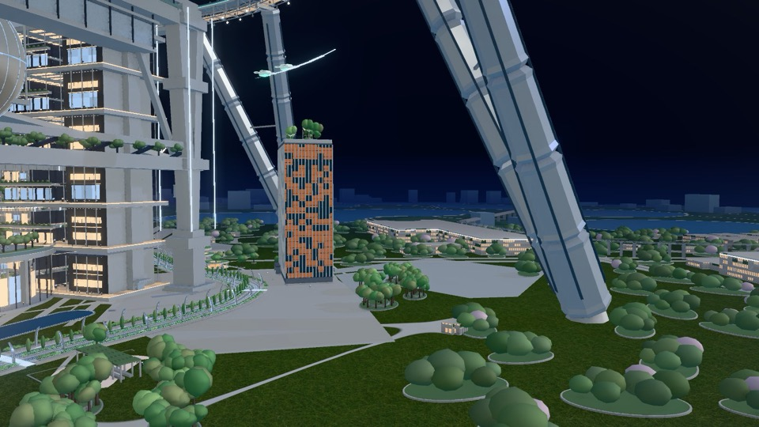
-3（22:00） SW rooms — sw:stage-rooms-west／east 17.4%
階段 1：建築／變化 階段 2：居民情景 下一步 未打磨 未有居民（共有軸） 階段 1；同時決定 SW 居民
建築 ：海岸邊的 room bays（有頂小房，mixed 時為半開放）。用途 ：供人獨處、休息的海邊小空間。存在理由 ：共享軸在岸邊的一面；選擇私人，岸邊便增加圍合的小房。
SW +1 → +2 sw:stage-rooms-west，佔全部提案 11.0%
哪項選擇推向這一邊 海辺で一時間、自由に過ごせるなら。あなたは、どんな場所で休みたいですか？「予約せず、誰でも一緒に使える開かれた海辺」
結果卡第一句（guest 的選擇） あなたは、予約せずに誰でも使える海辺を大切にしました。
結果卡第二句（變化說明） ほかの住民の声と重なり、水辺や庭の構成が変わり、静かに休む場所と集まれる場所の配置が調整されました。地點標示：水辺の居場所・庭の広場
變化後這裏的功能（設施卡） 予約せずに、海辺へ 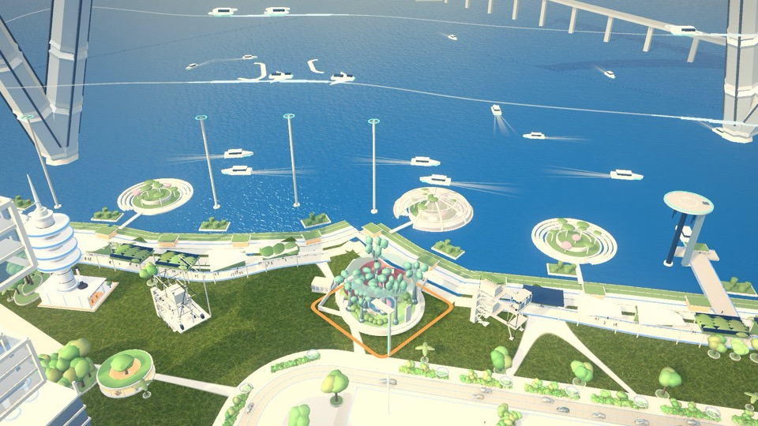
+1（12:00） 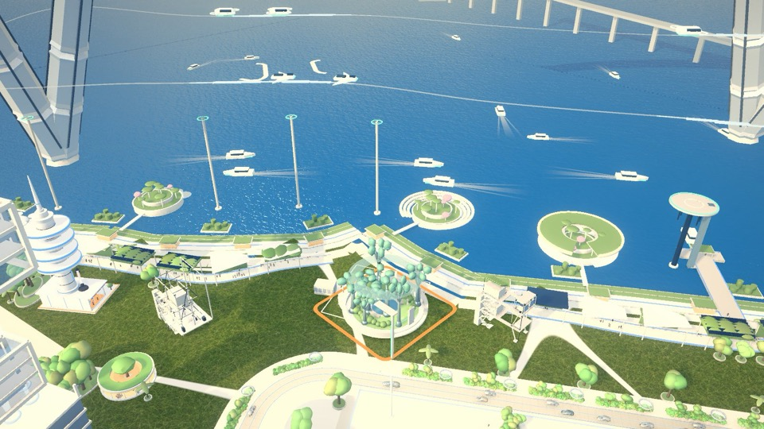
+2（12:00） 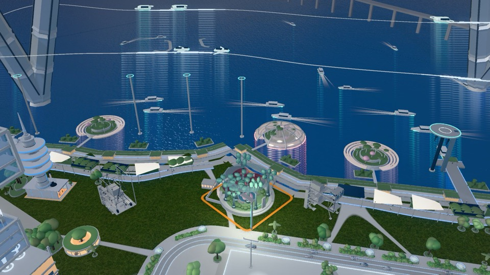
+1（22:00） 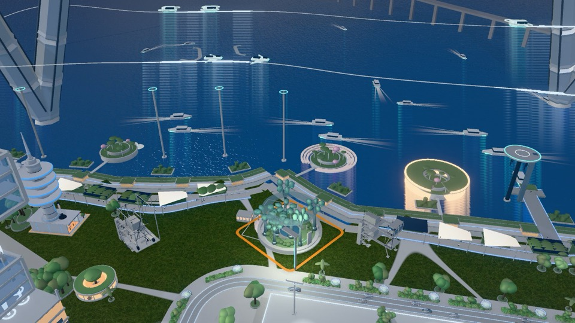
+2（22:00） SW -2 → -3 sw:stage-rooms-east，佔全部提案 6.4%
哪項選擇推向這一邊 海辺で一時間、自由に過ごせるなら。あなたは、どんな場所で休みたいですか？「予約して、一人や親しい人と静かに過ごせる場所」
結果卡第一句（guest 的選擇） あなたは、一人や親しい人と静かに過ごす時間を大切にしました。
結果卡第二句（變化說明） ほかの住民の声と重なり、水辺や庭の構成が変わり、静かに休む場所と集まれる場所の配置が調整されました。地點標示：水辺の居場所・庭の広場
變化後這裏的功能（設施卡） 海辺に、自分の時間を 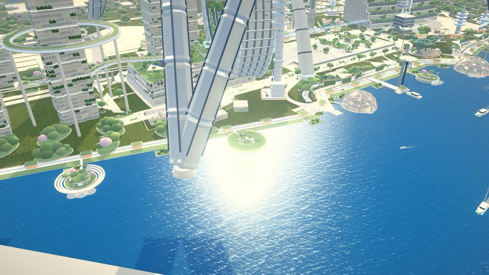
-2（12:00） 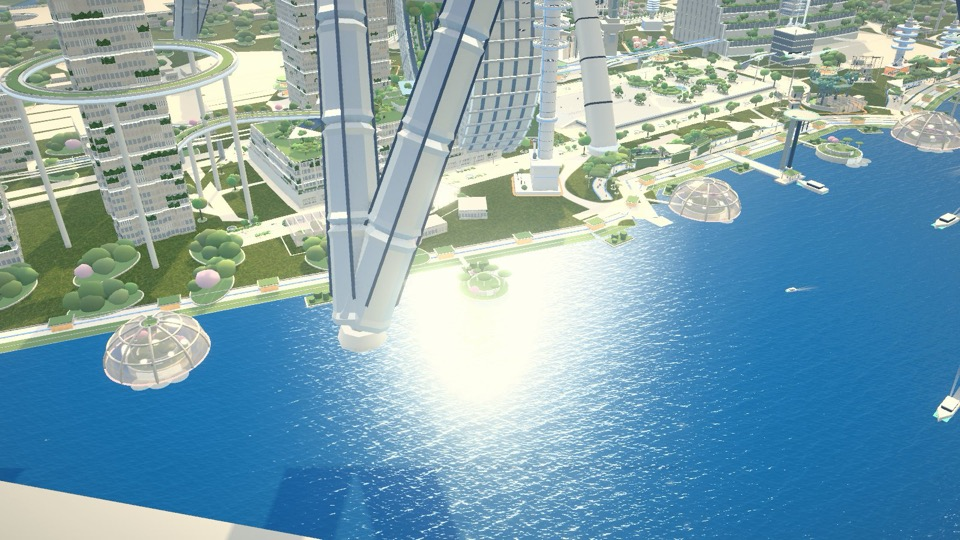
-3（12:00） 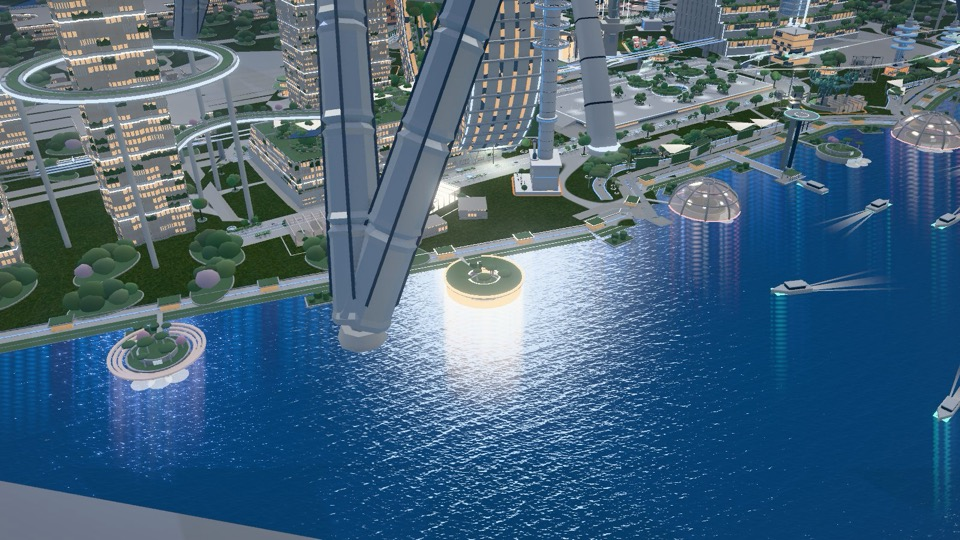
-2（22:00） 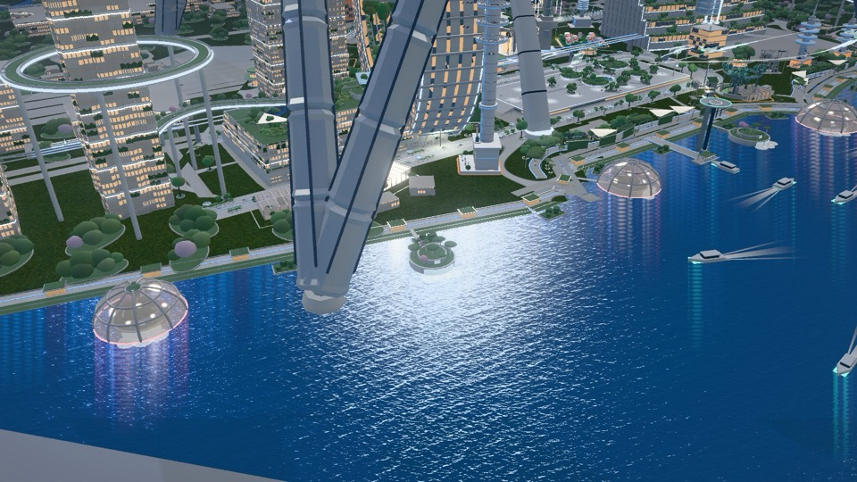
-3（22:00） SW focal — お台場南岸 10.5%
階段 1：建築／變化 階段 2：居民情景 下一步 未打磨 草案：凪（mixed 狀態進出各兩種轉變），待 owner 批准（handoff） 階段 1 驗收後方可進入階段 2；其間 owner 先審草案
建築 ：お台場南岸（−100, 297）。0（mixed）為 40 m、十層、60 格的活動モジュール棚 （吊桁＋外壁導軌，進出 mixed 時 headline 模組吊運，5 s 過場）；−1／+1 沿用原 COMMONS 的私人小庭與開放廣場模型。用途 ：−1 為私人小庭，0 為可把小型建築（活動模組）運入運出的棚，+1 為免預約的開放座位與廣場。存在理由 ：回應海邊應屬私人還是共享，mixed 的答案是「場所可以按需要換」。字幕與說明卡文案見 RESIDENT_COPY。
SW 0 → +1 sw:focal，佔全部提案 10.5%
哪項選擇推向這一邊 海辺で一時間、自由に過ごせるなら。あなたは、どんな場所で休みたいですか？「予約せず、誰でも一緒に使える開かれた海辺」
結果卡第一句（guest 的選擇） あなたは、予約せずに誰でも使える海辺を大切にしました。
結果卡第二句（變化說明） ほかの住民の声と重なり、この水辺では、活動モジュールが棚から運び出され、予約せずに使える共有席が増えました。地點標示：お台場南岸
變化後這裏的功能（設施卡） 予約せずに、海辺へ 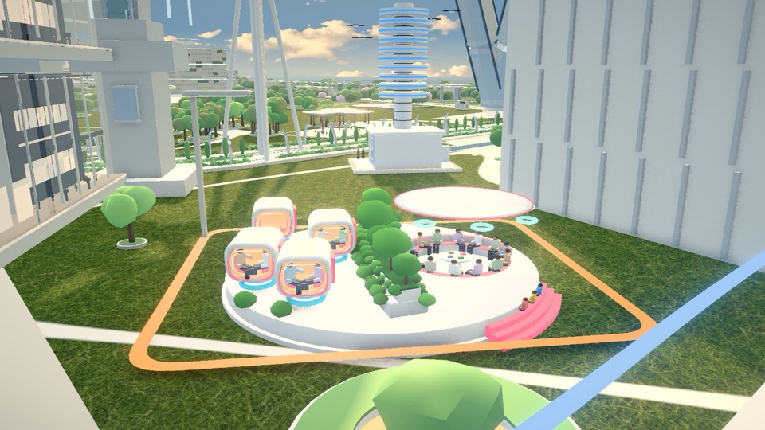
0（12:00） 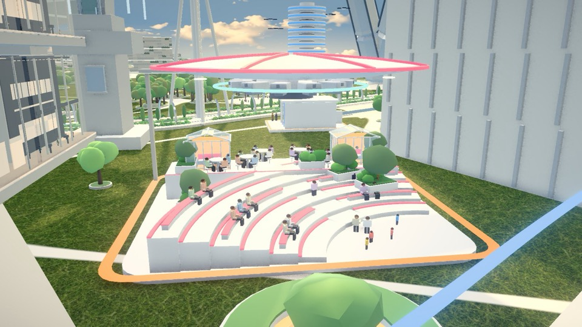
+1（12:00） 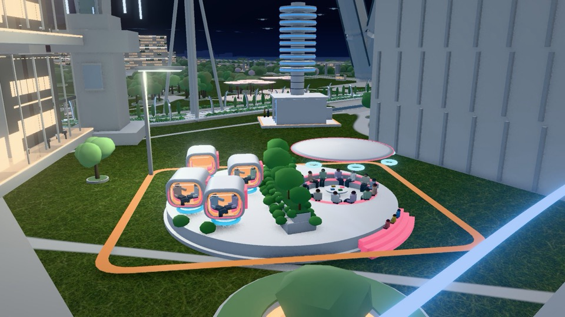
0（22:00） 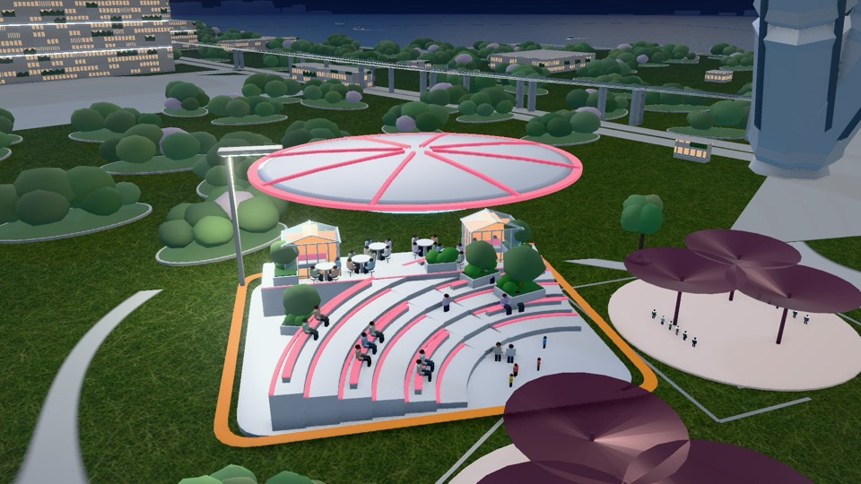
+1（22:00） SW 0 → -1 sw:focal，佔全部提案 10.5%
哪項選擇推向這一邊 海辺で一時間、自由に過ごせるなら。あなたは、どんな場所で休みたいですか？「予約して、一人や親しい人と静かに過ごせる場所」
結果卡第一句（guest 的選擇） あなたは、一人や親しい人と静かに過ごす時間を大切にしました。
結果卡第二句（變化說明） ほかの住民の声と重なり、この水辺では、活動モジュールが棚から運び出され、静かに過ごすための囲われた席が増えました。地點標示：お台場南岸
變化後這裏的功能（設施卡） 海辺に、自分の時間を 0（12:00） 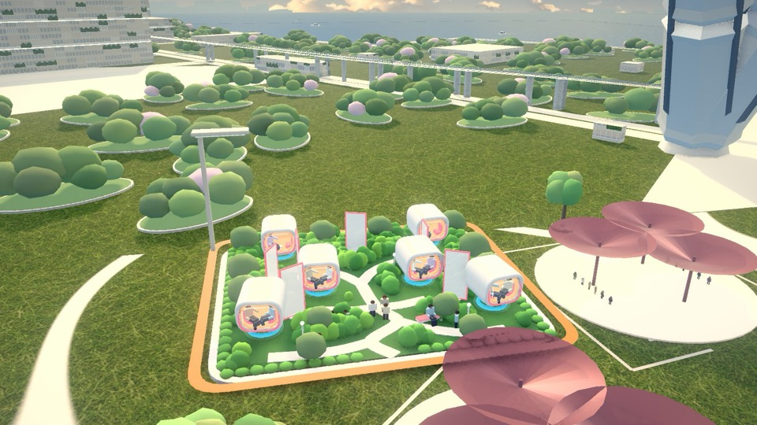
-1（12:00） 0（22:00） 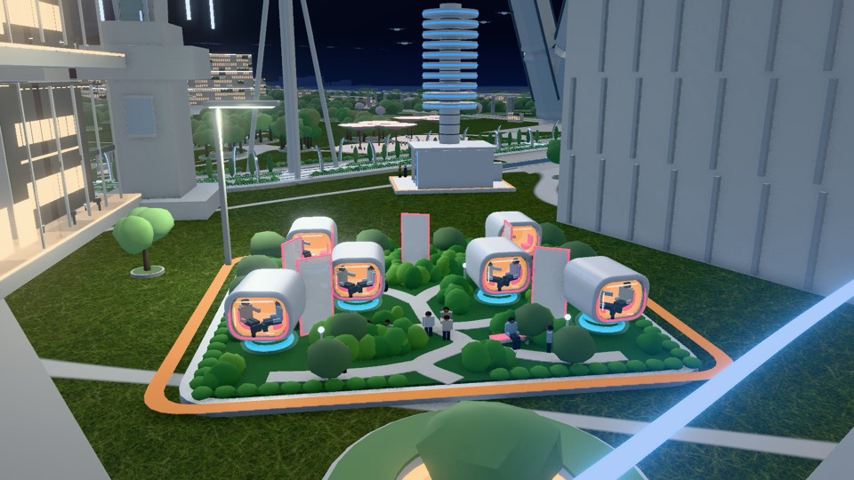
-1（22:00） 階段 2：お台場南岸 — 凪（ナギ）、41 歲、移動古書店主 實際變化 台詞（字幕） 行動 得／失 由私人小庭進入中間（−1 → 0） 静かな庭は減りましたが、私の店が棚に入りました。 小庭的圍牆退去；她牽著小台車，把書店模組引到地軌末端，掛出「営業中」的牌子，向路過的人點頭 得：店有了位置。失：安靜的小庭 由開放廣場進入中間（+1 → 0） 広場の席は減りました。でも、雨の日も店を開けられます。 廣場上的陽傘與座位收攏；她把書架推進模組門口，拉下條紋雨篷，翻開第一本書 得：不怕下雨。失：免預約的座位 由中間走向私人（0 → −1） 店を運び出しました。静かな庭で、今日は本を読むだけです。 小台車載著模組沿地軌駛出；她留在重新長出的小庭裡，坐下翻書 得：安靜。失：書店不再開 由中間走向開放（0 → +1） 店を広場へ運び出しました。誰でも座れる、立ち読みの日です。 模組駛出後，她把書架擺到廣場，旁邊的人隨意坐下立讀 得：人人可坐。失：沒有屋簷
SW courts — sw:stage-courts-west／south 7.2%
階段 1：建築／變化 階段 2：居民情景 下一步 未打磨 未有居民 階段 1
建築 ：內陸 40 米見方的 courts。用途 ：設圍牆的私人庭園，或設陽傘的開放共享廣場。存在理由 ：共享軸在內陸的一面；選擇開放，內陸便增加可供聚會的廣場。
SW +2 → +1 sw:stage-courts-west，佔全部提案 4.4%
哪項選擇推向這一邊 海辺で一時間、自由に過ごせるなら。あなたは、どんな場所で休みたいですか？「予約して、一人や親しい人と静かに過ごせる場所」
結果卡第一句（guest 的選擇） あなたは、一人や親しい人と静かに過ごす時間を大切にしました。
結果卡第二句（變化說明） ほかの住民の声と重なり、水辺や庭の構成が変わり、静かに休む場所と集まれる場所の配置が調整されました。地點標示：水辺の居場所・庭の広場
變化後這裏的功能（設施卡） 予約せずに、海辺へ 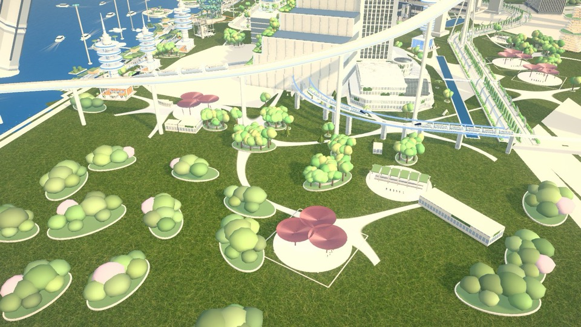
+2（12:00） 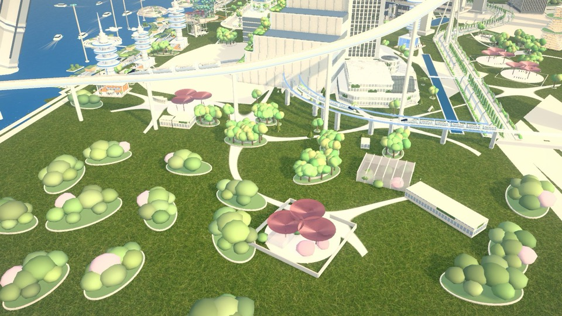
+1（12:00） 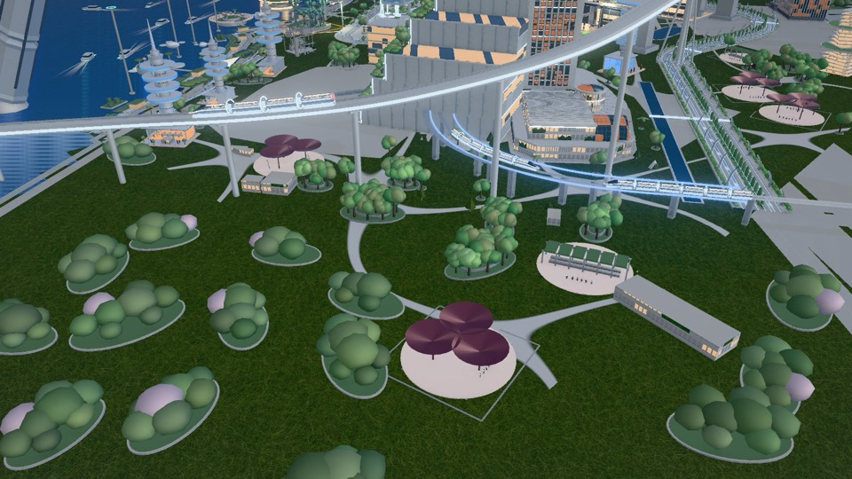
+2（22:00） 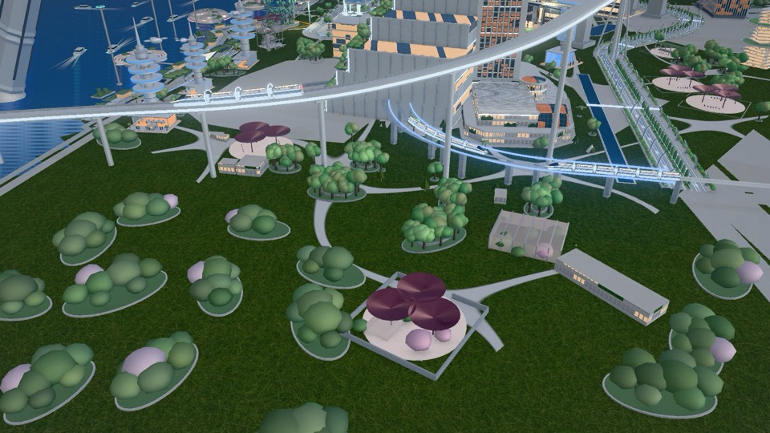
+1（22:00） SW -3 → -2 sw:stage-courts-south，佔全部提案 2.8%
哪項選擇推向這一邊 海辺で一時間、自由に過ごせるなら。あなたは、どんな場所で休みたいですか？「予約せず、誰でも一緒に使える開かれた海辺」
結果卡第一句（guest 的選擇） あなたは、予約せずに誰でも使える海辺を大切にしました。
結果卡第二句（變化說明） ほかの住民の声と重なり、水辺や庭の構成が変わり、静かに休む場所と集まれる場所の配置が調整されました。地點標示：水辺の居場所・庭の広場
變化後這裏的功能（設施卡） 海辺に、自分の時間を -3（12:00） -2（12:00） -3（22:00） -2（22:00）
能源四部件 4.5%
階段 1：建築／變化 階段 2：居民情景 下一步 早期 batch 已整合，未按 taste v2 重審 未有居民 最後；先由 owner 判斷是否需要打磨
建築 ：水庭（海邊蓄電庭園）、旋轉環（フジテレビ前蓄電環）、受電翼（海上接收軌道電力）、能源島（沖面核電島連檢修橋）。用途 ：四種電力來源及儲存方式。存在理由 ：城市需要電力；居民選擇電從何來，每一種都改變一段海邊景色。
相關選擇 毎日の電気を支える設備。あなたは、どんな海辺で暮らしたいですか？「水の音や機械が身近でも、海辺の庭で電気を蓄える暮らし」 「大きな機械が景色に加わっても、街の中心で電気を蓄える暮らし」 「海の上に受け取る面が広がっても、空から届く電気を使う暮らし」 「海の一部が設備の陸地に変わっても、沖の原子力施設から電気を届ける暮らし」
這些設施的功能（設施卡） 海辺の庭に、電気を蓄える 街の中心で、電気を蓄える 海の上で、空からの電気を受け取る 電気のために、海の境界が変わる 能源近鏡尚無前後對照截圖。